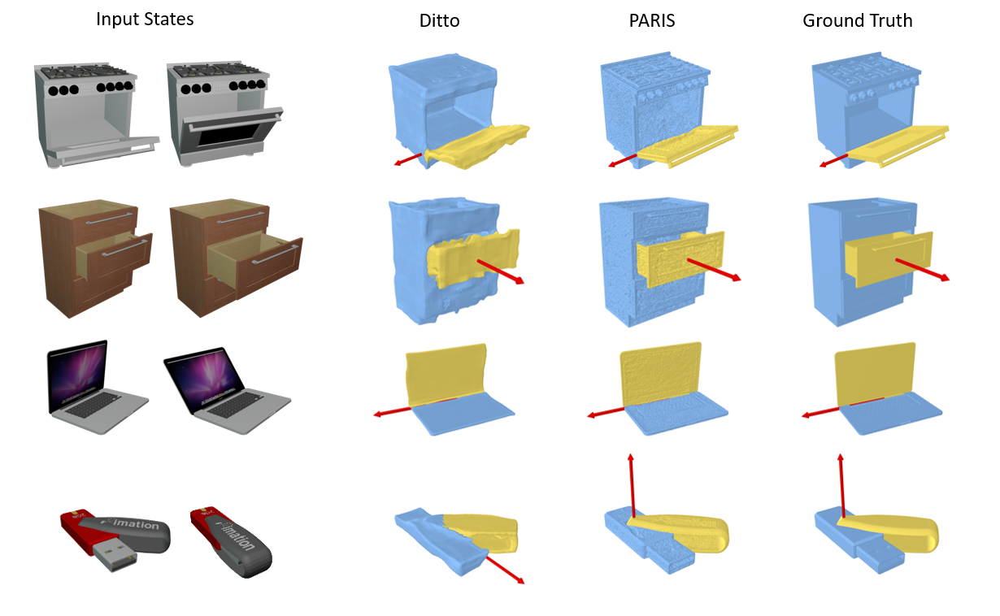
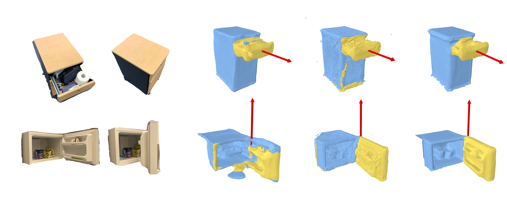

We address the task of simultaneous part-level reconstruction and motion parameter estimation for articulated objects. Given two sets of multi-view images of an object in two static articulation states, we decouple the movable part from the static part and reconstruct shape and appearance while predicting the motion parameters.
To tackle this problem, we present PARIS: a self-supervised, end-to-end architecture that learns part-level implicit shape and appearance models and optimizes motion parameters jointly without any 3D supervision, motion, or semantic annotation.
Our experiments show that our method generalizes better across object categories, and outperforms baselines and prior work that are given 3D point clouds as input. Our approach improves reconstruction relative to state-of-the-art baselines with a Chamfer-L1 distance reduction of 3.94 (45.2%) for objects and 26.79 (84.5%) for parts, and achieves 5\% error rate for motion estimation across 10 object categories.

Observing an object in two articulated states from multi-view RGB images, our PARIS can produce part-level reconstruction and motion estimation without any 3D supervision or motion annotation during training.
Here we show some comparison with the most-related work Ditto who consumes a pair of 3D point clouds as input.
Our methods can be easily applied to real scenarios that take real photos from multi-view as input.
We can also animate the objects to other unseen states for both shape and appearance by manipulating the motion parameters we estimated. Here we show the rendering results from an arbitrary novel view.

@article{jiayi2023paris,
author = {Liu, Jiayi and Mahdavi-Amiri, Ali and Savva, Manolis},
title = {PARIS: PARIS: Part-level Reconstruction and Motion Analysis for Articulated Objects},
year = {2023},
}